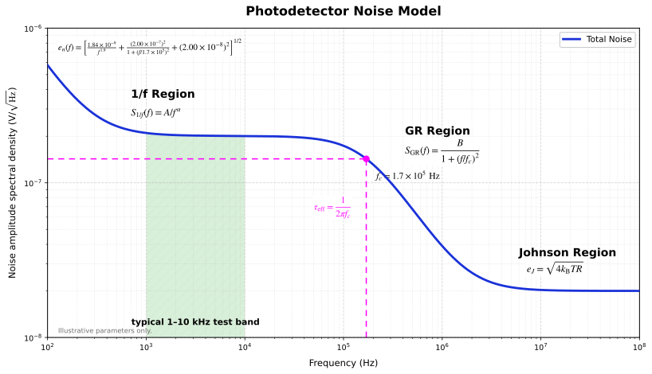
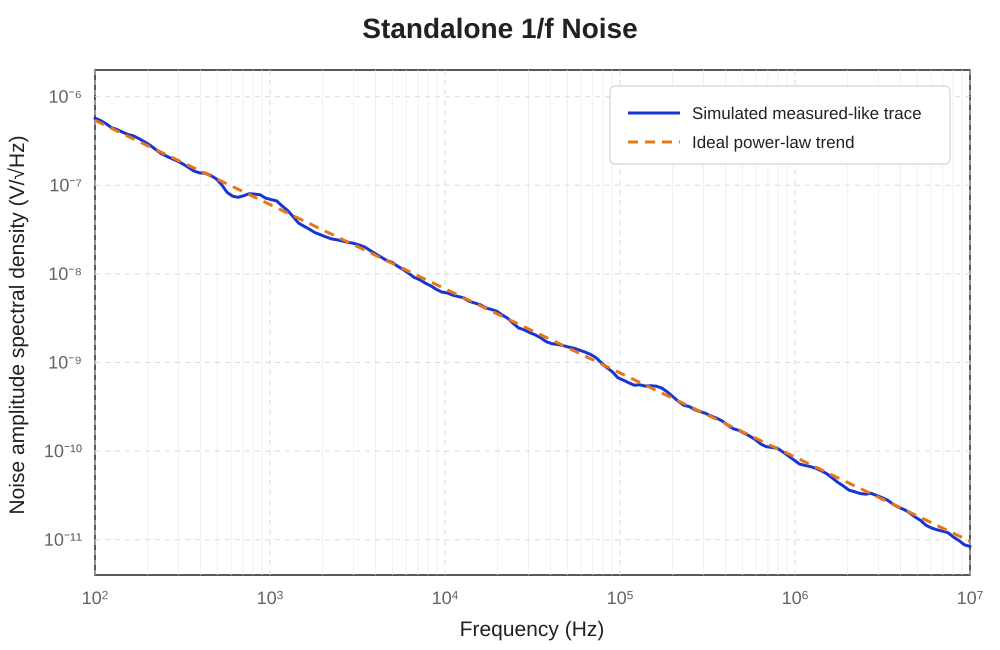
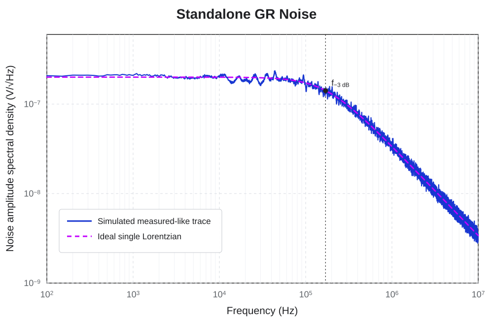
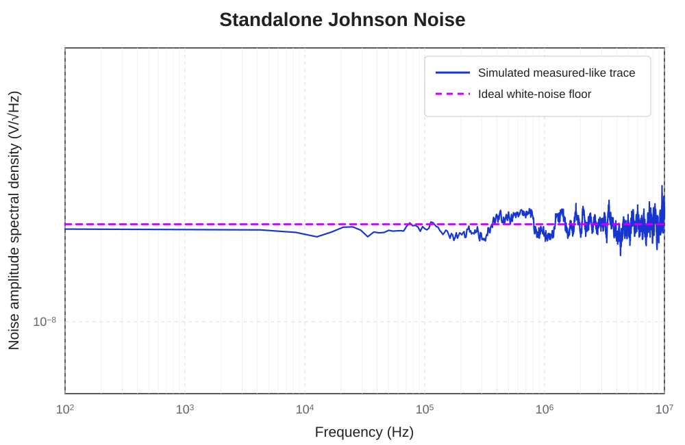

Core idea: An ideal MCT spectrum can be organized into \(1/f\), generation-recombination, and Johnson contributions. Independent noise powers add, so their amplitude spectral densities combine in quadrature.
Three-region MCT noise model
Notation: \(A_{1/f}\) is the low-frequency ASD at reference frequency \(f_0\), \(e_{\mathrm{GR},0}\) is the GR plateau ASD, \(e_J=\sqrt{4k_{\mathrm B}TR}\), and \(\beta=\alpha/2\) when \(\alpha\) denotes the PSD slope. In this model, \(f_{-3\mathrm{dB}}\) is the GR rolloff, not the lower-frequency \(1/f\)-to-GR crossover.
Scope: This reference focuses primarily on biased HgCdTe photoconductors. Photovoltaic MCT diodes may require additional shot, diffusion, tunneling, shunt, and readout-noise terms that are not represented by this three-component model.
A noise spectrum does not divide into three perfectly isolated bands. The contributions overlap, and the apparent boundaries move with detector resistance, temperature, bias, geometry, material quality, contacts, passivation, and the measurement chain. The regions are therefore useful interpretive limits—not rigid material constants.
Power spectral density versus amplitude spectral density
MCT noise is commonly plotted as voltage power spectral density \(S_V(f)\) in \(\mathrm{V^2/Hz}\), or as voltage amplitude spectral density \(e_n(f)=\sqrt{S_V(f)}\) in \(\mathrm{V}/\sqrt{\mathrm{Hz}}\). A lock-in frequency sweep or spectrum analyzer commonly presents amplitude spectral density.
The distinction matters when reading slopes. If \(S_V\propto 1/f^\alpha\), then \(e_n\propto 1/f^\beta\) with \(\beta=\alpha/2\). The direct NASD model above squares each component, adds the resulting noise powers, and then takes the square root.
Add independent noise sources in power, not amplitude. Component amplitude spectral densities combine in quadrature. Adding the visible curve heights directly generally overestimates the total.
How to interpret the model
The direct NASD equation combines a low-frequency power law, one GR Lorentzian, and the Johnson-Nyquist amplitude. Two frequencies should not be conflated: \(f_\times\) is the \(1/f\)-to-GR crossover where those contributions are equal, while \(f_{-3\mathrm{dB}}\) is the GR component's own rolloff.
Do not fit the three terms mechanically. A real MCT device may contain multiple Lorentzians, broadened relaxation-time distributions, contact noise, current crowding, passivation-related fluctuations, bias heating, microphonics, preamplifier noise, or transfer-function rolloffs.
Reading the spectrum

1/f region
Low-frequency excess noise in MCT can reflect traps, surfaces and passivation, contacts, current nonuniformity, bias heating, or slow drift. Its crossover with the GR plateau is a component intersection, not a \(-3\ \mathrm{dB}\) bandwidth.
GR region
A plateau rolls off at \(f_{-3\mathrm{dB}}\) when one effective relaxation time dominates. Auger-1, Auger-7, SRH processes, and deep levels can all influence the observed response.
Johnson region
After excess and GR noise roll off, the ideal detector floor approaches \(\sqrt{4k_{\mathrm B}TR}\). The measured floor may remain higher because of the readout chain.
The low-frequency \(1/f\) region
The exponent \(\beta\) describes the ASD slope. The corresponding PSD term is \(S_{1/f}=e_{1/f}^2\propto 1/f^{2\beta}\), so the common PSD notation \(S_{1/f}\propto1/f^\alpha\) uses \(\alpha=2\beta\). In MCT photoconductors, a broad distribution of trap and relaxation times can produce approximate power-law behavior. Contacts, surfaces, passivation, carrier-number fluctuations, mobility fluctuations, nonuniform current flow, bias instability, and slow thermal drift can produce similar low-frequency excess.

The crossover \(f_\times\) is defined by \(e_{1/f}(f_\times)=e_{\mathrm{GR}}(f_\times)\). It marks a change in the dominant noise contribution; it is not generally the GR \(-3\ \mathrm{dB}\) frequency.
The reference-frequency amplitude \(A_{1/f}\) becomes more physically useful when tracked against bias, current, resistance, area, temperature, contact geometry, processing history, and passivation state. One spectrum at one operating point rarely identifies a unique cause.
Practical interpretation: treat \(A_{1/f}\) and \(\beta\) as measured descriptors first. Assign a microscopic mechanism only after their scaling with operating condition and device geometry has been tested.
The generation-recombination region
A single relaxation process gives a Lorentzian PSD. In ASD form, the amplitude equals \(e_{\mathrm{GR},0}/\sqrt{2}\) at \(f_{-3\mathrm{dB}}\). This is distinct from the lower-frequency \(1/f\)-to-GR crossover. For a genuine first-order relaxation,

The word effective matters. In HgCdTe, Auger-1, Auger-7, Shockley-Read-Hall recombination, deep levels, and transport effects can contribute overlapping time scales. Several processes can produce multiple Lorentzians or one broadened feature, so the observed rolloff need not equal one uncomplicated bulk minority-carrier lifetime.
The Johnson region
In the ideal MCT spectrum, the high-frequency detector floor is Johnson-Nyquist noise from thermal carrier motion through the detector resistance:
The Johnson region is frequency independent over the classical measurement band. Its level changes with the detector's operating temperature and resistance, so both values must be recorded at the same bias point used for the noise sweep.

A flat high-frequency floor is not automatically the detector's Johnson region. Preamplifier voltage noise, preamplifier current noise acting through the MCT impedance, lock-in input noise, cable capacitance, gain errors, and bandwidth limits can determine the observed plateau.
A useful Johnson-region check compares the measured high-frequency floor with \(\sqrt{4k_{\mathrm B}TR}\), then repeats the acquisition with a known resistor and a shorted input through the same readout chain.
When a GR rolloff is not a lifetime
The equation \(\tau_{\mathrm{eff}}=1/(2\pi f_{-3\mathrm{dB}})\) is correct for a first-order relaxation. The difficult part is proving that the measured rolloff belongs to that relaxation.
Before interpreting \(f_{-3\mathrm{dB}}\) as a carrier-lifetime rolloff, exclude:
- MCT resistance with cable, contact, or input capacitance;
- preamplifier bandwidth and compensation;
- lock-in output filtering and ENBW conventions;
- optical chopper, source, or readout transfer functions;
- several overlapping trap or recombination time constants;
- bias heating and operating-point drift.
The strongest interpretation comes from agreement among independent measurements. The noise rolloff, modulated-responsivity rolloff, and time-domain rise or decay should produce compatible time constants under the same temperature, bias, and optical condition.
Why the 1–10 kHz range is often useful
A 1–10 kHz range is often practical for MCT noise testing because it can lie above the strongest low-frequency excess while remaining well below a typical GR rolloff. That makes the measured value more representative of the GR plateau rather than the \(1/f\) rise or the high-frequency Johnson region.
This range is not universal. A detector with a lower GR rolloff, different lifetime, different bias, or significant instrumentation limits may require another frequency window. The correct test frequency is established from the measured spectrum and responsivity transfer function—not from a fixed convention alone.
A practical fitting workflow
- Confirm the units. Determine whether the data are PSD in \(\mathrm{V^2/Hz}\) or ASD in \(\mathrm{V}/\sqrt{\mathrm{Hz}}\), and verify that ENBW normalization has been applied exactly once.
- Record the MCT operating point. Include temperature, resistance, bias, current, device dimensions, optical condition, and stabilization time.
- Establish the system floor. Measure a shorted input, open input, and known resistor through the same preamplifier, cabling, gain, and acquisition settings.
- Check the Johnson prediction. Calculate \(e_J=\sqrt{4k_{\mathrm B}TR}\) from the measured detector resistance and temperature, then compare it with the high-frequency ASD plateau.
- Fit Lorentzian structure. Estimate \(e_{\mathrm{GR},0}\) and \(f_{-3\mathrm{dB}}\), then inspect residuals for additional corners or broadening.
- Fit the low-frequency term last. Estimate \(A_{1/f}\) and \(\beta\), then calculate \(f_\times\) from the intersection of the fitted \(1/f\) and GR components.
- Repeat across operating conditions. Bias, temperature, resistance, area, contact geometry, and passivation provide the scaling needed for physical interpretation.
- Inspect the time series. Random-telegraph switching, intermittent contacts, thermal drift, and microphonics can be hidden by a smooth averaged spectrum.
What the fitted quantities mean
| Quantity | Direct meaning | What it does not prove by itself |
|---|---|---|
| \(A_{1/f}\) | Fitted low-frequency ASD at the reference frequency \(f_0\) | A unique trap density, surface, or contact mechanism |
| \(\beta\) | Log-log ASD slope magnitude of the power-law term; \(\alpha=2\beta\) in PSD notation | That one microscopic \(1/f\) model is correct |
| \(e_{\mathrm{GR},0}\) | Low-frequency ASD plateau of the fitted GR contribution | Which MCT recombination channel produced it |
| \(f_\times\) | Frequency where the fitted \(1/f\) and GR contributions are equal | A \(-3\ \mathrm{dB}\) bandwidth or carrier lifetime |
| \(f_{-3\mathrm{dB}}\) | GR-component \(-3\ \mathrm{dB}\) rolloff | Bulk minority-carrier lifetime without transfer-function checks |
| \(e_J\) | Ideal Johnson ASD \(\sqrt{4k_{\mathrm B}TR}\) for the measured MCT resistance and temperature | That the measured high-frequency floor is detector-limited |
Common interpretation mistakes
- Adding amplitude spectral densities directly instead of adding independent noise powers.
- Using a PSD slope and ASD slope as though they were the same exponent.
- Calling every low-frequency increase “trap noise” without checking drift, contacts, passivation, or bias heating.
- Calling the \(1/f\)-to-GR crossover and the GR \(-3\ \mathrm{dB}\) rolloff the same corner frequency.
- Assuming the three regions must appear as clean, nonoverlapping bands.
- Extracting a lifetime from the first visible rolloff without de-embedding electrical and instrument response.
- Calling a flat high-frequency region Johnson noise without comparing it with \(4k_{\mathrm B}TR\) and the measured system floor.
- Fitting a stationary model to a record containing random-telegraph switching or slow drift.
What to report
A reproducible MCT noise-spectrum result should include detector temperature, resistance, bias, current, device dimensions, optical condition, preamplifier and gain, acquisition method, frequency points or sample rate, record length, averaging, ENBW, and system-floor measurements. Report fitted uncertainties and the frequency interval used for each fit.
The final interpretation should distinguish three levels of confidence:
- Observed: the measured MCT slope, GR plateau, crossover, rolloff, or high-frequency floor.
- Modeled: the mathematical component used to fit that feature.
- Interpreted: the physical mechanism proposed after independent checks.
References
Technical references checked July 27, 2026.
- J. B. Johnson, “Thermal Agitation of Electricity in Conductors,” Physical Review 32, 97–109 (1928)
- H. Nyquist, “Thermal Agitation of Electric Charge in Conductors,” Physical Review 32, 110–113 (1928)
- S. Machlup, “Noise in Semiconductors: Spectrum of a Two-Parameter Random Signal,” Journal of Applied Physics 25, 341–343 (1954)
- P. Dutta and P. M. Horn, “Low-Frequency Fluctuations in Solids: \(1/f\) Noise,” Reviews of Modern Physics 53, 497–516 (1981)
- A. D. van Rheenen, G. Bosman, and C. M. van Vliet, “Decomposition of Generation-Recombination Noise Spectra in Separate Lorentzians,” Solid-State Electronics 28, 457–463 (1985)
- A. E. Iverson and D. L. Smith, “Theory of Deep Level Trap Effects on Generation-Recombination Noise in HgCdTe Photoconductors,” Journal of Applied Physics 58, 579–587 (1985)
Need help interpreting detector data?
Brooks Photonics reviews electrical, spectral, and noise measurements for HgCdTe, InSb, and related infrared detectors.
Discuss your data